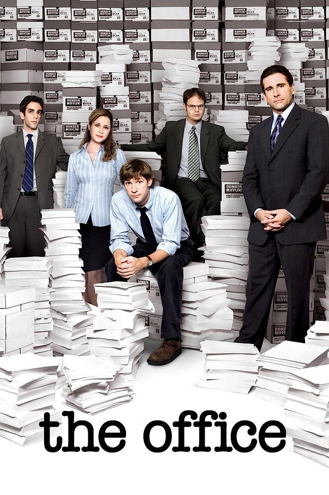

Esta pagina nos proporciona una presentacion del alumno y un formulario que nos permitira introducir diversos datos
- Página de presentación del alumno
- Formulario de contacto
Esta pagina tratara de mostrarnos una foto del alumno, sus estudios, si ha trabajado anteriormente y dónde, y su residencia actual
En esta página podemos encontrar un formulario a rellenar con el nombre, los apellidos, el email, el DNI y un motivo del mensaje
 |
Game of Thrones (GOT; llamada Juego de tronos en España) es una serie de televisión de drama y fantasía medieval desarrollada por David Benioff y D. B. Weiss y producida por la cadena HBO. Su argumento está inspirado en la serie de novelas Canción de hielo y fuego, escrita por el estadounidense George R. R. Martin, y relata las vivencias de un grupo de personajes de distintas casas nobiliarias en el continente ficticio de Poniente para tener el control del Trono de Hierro y gobernar los siete reinos que conforman el territorio. |
 |
The Last of Us es una serie de televisión estadounidense postapocalíptica que se estrenó el 15 de enero de 2023 a través de HBO. Basada en el videojuego de 2013 del mismo nombre desarrollado por Naughty Dog, la serie sigue a Joel (Pedro Pascal), un contrabandista encargado de escoltar a la adolescente Ellie (Bella Ramsey) a través de un Estados Unidos postapocalíptico. También cuenta con Tommy (Gabriel Luna), el hermano menor de Joel y exsoldado. |
|  | The Office (La oficina en Hispanoamérica) es una serie de televisión estadounidense de humor ambientada en una oficina regional de venta de papel radicada en la localidad de Scranton, en Pensilvania (Estados Unidos). Adaptada a partir de la serie británica del mismo nombre, se estrenó en la cadena de televisión estadounidense National Broadcasting Company (NBC) el 24 de marzo de 2005. Ha ganado los premios Primetime Emmy y Peabody. Aunque se trata de una obra de ficción, la grabación adopta el formato de falso documental, en el sentido de que los actores a veces miran a cámara e, incluso, se dirigen directamente a ella comentando algunas escenas. |